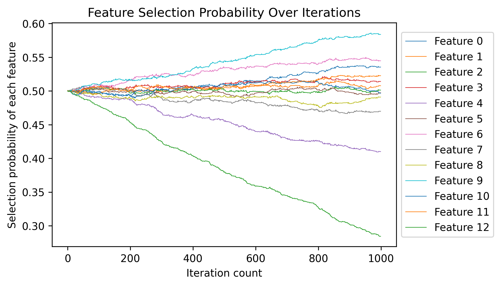

Once Model Determined, Once Feature Importance Determined
The concept of feature importance has been around for a long time, but it remains somewhat abstract. Many people believe that feature importance is fixed regardless of the learning model used, or that it varies based on the feature selection methods employed. However, feature importance is actually determined by the learning model itself.
Foundation
We have the following lemma holds:
Let \(X_1, X_2, \ldots, X_n\) be independent and identically distributed random variables following a certain distribution. Define the partial sums \(S(k) = \sum_{i=1}^{k} X_i\) for $ k = 1, 2, , n $. Let \(A_n = \{ S(1), S(2), \ldots, S(n) \}\) and \(B_n = \{ 1, 2, \ldots, n \}\).
Then, we claim that
\[ \lim_{n \to \infty} r(A_n, B_n) \in \{-1, 1\}, \] where \(r(A_n, B_n)\) denotes the Spearman correlation coefficient between the sets \(A_n\) and \(B_n\).
I have not found a proof or relevant materials about this, but experimental results show it holds for every cases I tried. You can run the following code and explore this lemma.
1 | |
Feature Selection
Specifically speaking, here we are talking about wrapper feature selection, that we treat the criterion as a black box. The input is certain feature subset and the output is the evaluation metric (like classification accuracy) of the learning algorithm.
There exists a strong relationship between wrapper feature selection and the above lemma. Suppose we have a weight array that records the importance values of each feature. These importance values can be defined as the selection probabilities of the corresponding features. When we sample a feature subset based on this weight array, the learning algorithm and training data remain constant, thereby determining the black box criterion. Consequently, each feature adheres to a certain (and complex) selected probability distribution relative to its contribution to the criterion. The key distinction is that the above lemma is one-dimensional, while the feature space is multi-dimensional. Nonetheless, the margin distribution is determined. For any individual feature, it follows a specific distribution that relates its selection probability to the expected value of the criterion. Thus, through iterative processes, we can update the feature weights based on the differences in criterion values, effectively aligning with the principles outlined in the above lemma.
Let's use more rigor language to describe it. Assume we have a dataset with \(n\) features \(F_1, F_2, \dots,F_n\). The feature subset is defined by a binary array \(X\in { \{0,1\} }^n\). The criterion \(f(*):{ \{0,1\} }^n \rightarrow [0,1]\) is used to evaluate the quality of input \(X\). We aim to find the best feature subset \(X^*\) to make the criterion maximum. \[ X^*=\max_{X\in { \{0,1\} }^n} f(X) \] Some question may be raised: if \(f(*)\) is a black box, why can we find a better solution than randomly guess? Actually there exists some clue for find better solution, for example, a feature subset contains a "great" feature is more possible to have a higher quality. This is like why KNN works to some extent.
Get in back to the point, we introduce a weight array \(W\in [0,1]^n\) to record selected probability of features, as well as it represents the feature importance. We decide which features are selected based on \(W\), i.e. \[ P(X_i=1)=W_i \quad (i=1,2,\dots n) \] Following I use \(W_i^{(t)}\) to denote the selected probability of \(i\)-th feature in \(t\)-th iteration. Based on our assumption, feature with higher weight contributes more to criterion. Therefore, weight array can updated as follows: \[ W_i^{(m)}=\sum_{t=1}^{m-1} \alpha (f(X^{(t+1)})-f(X^{(t)}))\odot X_i^{(t+1)}. \] The meaning of the updating of \(W\) is: if a feature is selected (\(X_i = 1\)), the criterion value is considered as partly affected by this feature. If it has positive effect to the criterion, the criterion value is more likely to be higher than when it is not selected. i.e. \(f(X^{(t+1)})-f(X^{(t)})\) is more likely to be a value greater than 0. Otherwise it has negative effect to the criterion, the the criterion value is more likely to be lower than when it is not selected. To avoid \(W\) being out of range \([0,1]\), we need a constant parameter \(\alpha\) to limit its range.
Interestingly, the updating of \(W\) follows the above lemma. This is determined by the dataset and learning model. Since the black box criterion is determined by these two factors, the distribution that each feature follows relating its selection probability to the expected value of the criterion is determined. The sample code is as follows.
1 | |
The result is shown in the following figure.

The value curves in \(W\) change linearly with each iteration. What's more, they show clear differences in slope. Some features have a high positive slope while some have a high negative slope. This phenomenon can be attributed to the relative importance of the features. You can try different datasets and algorithms. And you will find only these two factors can affect the curve slope. Repeating experiments on a single dataset will yield consistently similar results.
Conclusion
This article describes a linear phenomenon in the representation of feature importance, which is essentially a property of independent and identically distributed random walks. Furthermore, the selection probabilities of the features exhibit significant differences in slope, indicating variations in their importance. This demonstrates that feature importance is objectively present and has been determined by the data and the learning algorithm.